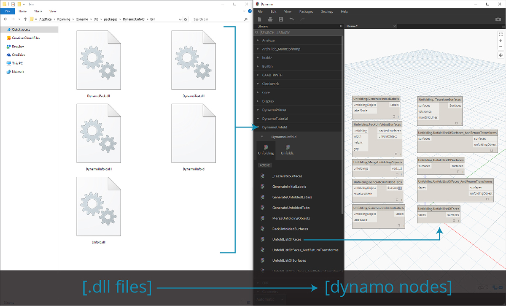
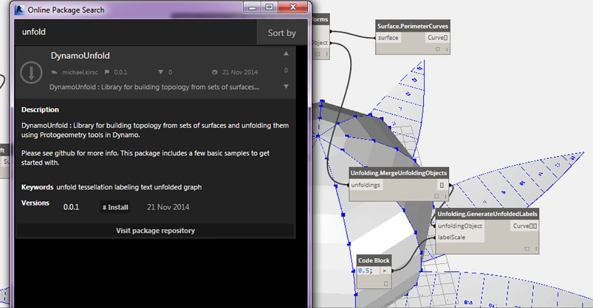
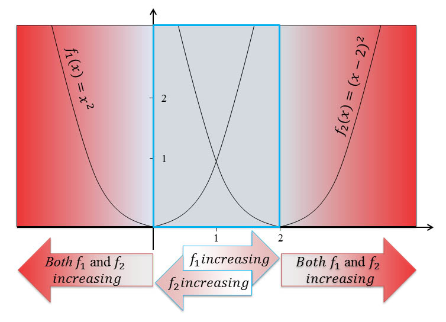
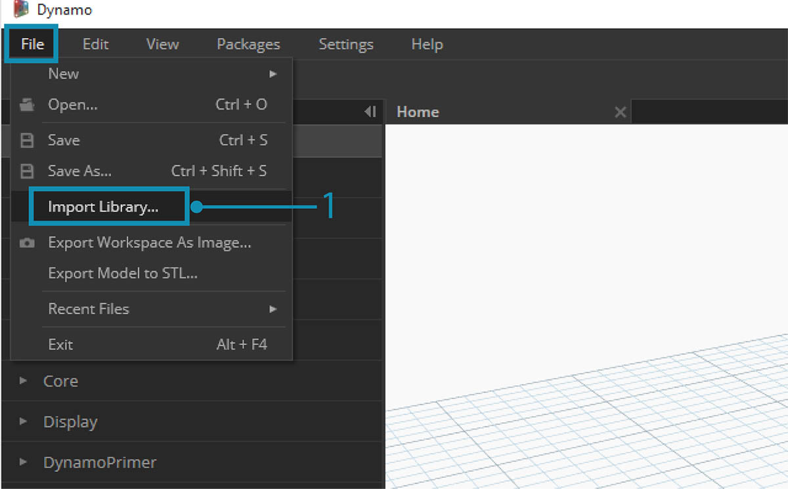
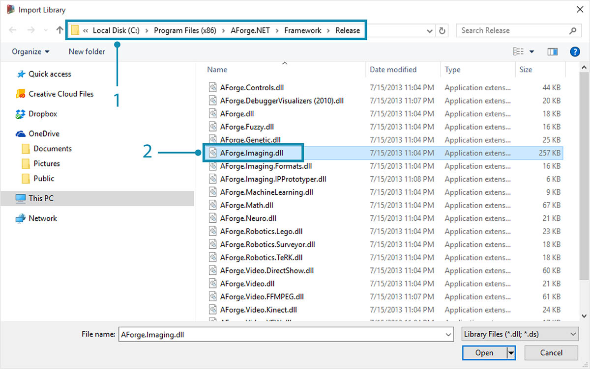

什麼是 Zero-Touch？
Zero-Touch 匯入係指匯入 C# 資源庫所用的簡易點選方法。Dynamo 將讀取 .dll 檔案的公開方法，並將其轉換為 Dynamo 節點。您可以使用 Zero-Touch 開發自己的自訂節點與套件，並將外部資源庫匯入至 Dynamo 環境。

使用 Zero-Touch，您可以實際匯入不一定是為 Dynamo 開發的資源庫，並建立一組新節點。目前的 Zero-Touch 功能展示出 Dynamo 專案的跨平台能力。
本節將展示如何使用 Zero-Touch 匯入協力廠商的資源庫。如需有關開發自己 Zero-Touch 資源庫的資訊，請參考 Dynamo Wiki 頁面。
Zero-Touch 套件
Zero-touch 套件是使用者定義之自訂節點的良好補充。以下表格中列示了使用 C# 資源庫的一些套件。如需有關套件的更多詳細資訊，請造訪附錄中的「套件」一節。
| 標誌/影像 | 名稱 |
|---|---|
 |
網面工具套件 |
|  | Dynamo Unfold |
 |
Rhynamo |
|  | Optimo |
案例研究 - 匯入 AForge
在本案例研究中，我們將展示如何匯入 AForge 外部 .dll 資源庫。AForge 是功能強大的資源庫，提供從影像處理到人工智慧的一系列功能。我們將參考 AForge 的影像類別執行以下的一些影像處理練習。
下載並解壓縮此套件案例研究隨附的範例檔案 (按一下右鍵，然後按一下「連結另存為...」)。附錄中提供範例檔案的完整清單。Zero-Touch-Examples.zip。
- 我們從下載 AForge 開始。在 AForge 下載頁面上，選取 [Download Installer (下載安裝程式)]，並在下載完成後進行安裝。

- 在 Dynamo 中，建立新檔案，然後選取 「檔案」>「匯入資源庫...」

- 在快顯視窗中，導覽至 AForge 安裝的 Release 資料夾。該資料夾可能位於類似如下所示的資料夾中：C:\Program Files (x86)\AForge.NET\Framework\Release。
- AForge.Imaging.dll：在此案例研究中，我們只希望使用 AForge 資源庫中的該檔案。選取此 .dll 檔案，然後按一下「開啟」。

- 返回 Dynamo，您應該已看到資源庫工具列中已加入「AForge」節點群組。現在，可以從我們的視覺程式存取 AForge 影像資源庫！
練習 1 - 邊偵測
現在已匯入資源庫，我們將從這第一個簡易練習開始。我們將對範例影像執行某些基本影像處理，以展示 AForge 影像如何進行篩選。我們將使用「觀看影像」節點以展示結果，並在 Dynamo 中套用與 Photoshop 中的篩選類似的篩選。
下載並解壓縮此套件案例研究隨附的範例檔案 (按一下右鍵，然後按一下「連結另存為...」)。附錄中提供範例檔案的完整清單。ZeroTouchImages.zip
現在已匯入資源庫，我們將從這第一個簡易練習 (01-EdgeDetection.dyn) 開始。我們將對範例影像執行某些基本影像處理，以展示 AForge 影像如何進行篩選。我們將使用「觀看影像」節點以展示結果，並在 Dynamo 中套用與 Photoshop 中的篩選類似的篩選。

首先，我們將匯入要使用的影像。加入 File Path 節點至圖元區，並從下載的練習資料夾 (photo cred: flickr) 中選取「soapbubbles.jpg」。

- File Path 節點僅提供我們所選影像的路徑字串。我們需要將此檔案路徑轉換為 Dynamo 環境中的影像。
- 將 File Path 節點連接至 File.FromPath 節點。
- 為了將此檔案轉換為影像，我們將使用 Image.ReadFromFile 節點。
- 最後，我們來查看結果！將 Watch Image 節點放至圖元區，並連接至 Image.ReadFromFile。我們尚未使用 AForge，但已成功將影像匯入至 Dynamo。

在 AForge.Imaging.AForge.Filters (「導覽」功能表中) 下，您會注意到有許多可用的篩選。我們現在將使用這些篩選的其中之一，以根據閾值對影像執行去飽和度。
- 將三個滑棒放至圖元區，然後將其範圍變更為 0 到 1，將其步長值變更為 0.01。
- 加入 Grayscale.Grayscale 節點至圖元區。這是 AForge 篩選，會將灰階篩選套用至影像。從步驟 1 將這三個滑棒連接至 cr、cg 和 cb。將頂部與底部滑棒的值變更為 1，將中間滑棒的值變更為 0。
- 若要套用灰階篩選，我們需要對影像採取某項動作。為此我們使用 IFilter.Apply。將影像連接至影像輸入，並將 Grayscale.Grayscale 連接至 iFilter 輸入。
- 插入至觀看影像節點，即可取得去飽和度的影像。

我們可以控制如何根據紅、綠、藍的閾值對此影像執行去飽和度。這些閾值由 Grayscale.Grayscale 節點的輸入定義。請注意，影像看起來非常暗，這是因為我們的滑棒中將綠色的值設定為 0。
- 將頂部與底部滑棒的值變更為 0，將中間滑棒的值變更為 1。這樣即可取得更清晰的去飽和度影像。

接下來我們使用去飽和度影像，並對其套用其他篩選。去飽和度影像具有一定的對比度，因此我們將會對某些邊偵測進行測試。
- 加入 SobelEdgeDetector.SobelEdgeDetector 節點至圖元區。將此節點作為 IFilter 連接至新的 IFilter 節點，並將去飽和度影像連接至 IFilter 節點的影像輸入。
- Sobel 邊偵測器已在新影像中亮顯邊。

拉近後，邊偵測器已顯示標示圈的外框 (以像素為單位)。AForge 資源庫的工具可利用與此類似的結果並建立 Dynamo 幾何圖形。我們將在下一個練習中探索該功能。
練習 2 - 矩形建立
下載並解壓縮此套件案例研究隨附的範例檔案 (按一下右鍵，然後按一下「連結另存為...」)。附錄中提供範例檔案的完整清單。ZeroTouchImages.zip
現在我們已介紹了一些基本影像處理，接下來使用影像來驅動 Dynamo 幾何圖形！在本練習中，基本上我們的目的是使用 AForge 與 Dynamo 執行影像的「即時追蹤」。我們將使用簡易的作業從參考影像中萃取矩形，不過 AForge 中提供了執行更複雜作業的工具。我們將使用所下載練習檔案中的 02-RectangleCreation.dyn。

- 使用 File Path 節點，導覽至練習資料夾中的 grid.jpg。
- 連接上述其餘的一系列節點，以顯示路線參數式格線。
在下一步，我們將參考影像中的白色正方形，並將其轉換為實際的 Dynamo 幾何圖形。AForge 具有許多功能強大的電腦視覺工具，這裡我們將使用其中適用於資源庫的一項非常重要的工具，名為 BlobCounter。

- 加入 BlobCounter 至圖元區後，我們需要採取某種方式來處理影像 (類似於上一個練習中的 IFilter 工具)。很遺憾，「處理影像」節點不會立刻顯示在 Dynamo 資源庫中。這是因為函數可能沒有顯示在 AForge 來源代碼中。若要修正此問題，我們需要尋找因應措施。

- 加入 Python 節點至圖元區。
import clr
clr.AddReference('AForge.Imaging')
from AForge.Imaging import *
bc= BlobCounter()
bc.ProcessImage(IN[0])
OUT=bc
加入上述代碼至 Python 節點。此代碼將匯入 AForge 資源庫，然後處理匯入的影像。

將影像輸出連接至 Python 節點輸入，Python 節點將產生 AForge.Imaging.BlobCounter 結果。
後續步驟將提供熟練使用 AForge 影像 API 的某些技巧。您不需要瞭解 Dynamo 工作的所有這些技巧。這更多是展示在 Dynamo 環境中靈活使用外部資源庫。

- 將 Python 腳本的輸出連接至 BlobCounterBase.GetObjectRectangles。這會讀取影像中的物件，並根據閾值從像素空間萃取量化的矩形。

- 加入另一個 Python 節點至圖元區，連接至 GetObjectRectangles，然後輸入以下代碼。這將建立經過組織的 Dynamo 物件清單。
OUT = []
for rec in IN[0]:
subOUT=[]
subOUT.append(rec.X)
subOUT.append(rec.Y)
subOUT.append(rec.Width)
subOUT.append(rec.Height)
OUT.append(subOUT)

- 轉置上一步 Python 節點的輸出。這會建立 4 個清單，分別代表每個矩形的 X、Y、寬度及高度。
- 使用代碼圖塊，我們將資料組織為適合 Rectangle.ByCornerPoints 節點 (以下代碼) 的結構。
recData;
x0=List.GetItemAtIndex(recData,0);
y0=List.GetItemAtIndex(recData,1);
width=List.GetItemAtIndex(recData,2);
height=List.GetItemAtIndex(recData,3);
x1=x0+width;
y1=y0+height;
p0=Autodesk.Point.ByCoordinates(x0,y0);
p1=Autodesk.Point.ByCoordinates(x0,y1);
p2=Autodesk.Point.ByCoordinates(x1,y1);
p3=Autodesk.Point.ByCoordinates(x1,y0);

拉遠後，即可產生一系列代表影像中白色正方形的矩形。透過程式設計，我們已實現與 Illustrator 中的即時追蹤 (大致) 類似的功能！

不過，我們還需要進行一些清理。拉近後，可以看到有一些不需要的小矩形。

- 我們將在 GetObjectRectangles 節點與 Python 節點之間插入另一個 Python 節點，以除去不需要的矩形。節點的代碼位於下方，會移除小於指定大小的所有矩形。
rectangles=IN[0]
OUT=[]
for rec in rectangles:
if rec.Width>8 and rec.Height>8:
OUT.append(rec)

消除多餘的矩形後，只是為了好玩，我們將從矩形建立曲面，並根據矩形的面積依距離擠出矩形。

- 最後，將 both_sides 輸入變更為 False，會產生一個方向的擠出。將產生的此結果浸入樹脂，將產生造型極為奇特的桌子。
以上是基本範例，但其中展示的概念通用於激動人心的真實應用。電腦視覺可用於許多程序。這裡列示一些範例：條碼讀取器、透視配合、投影對映及增強實景。如需此練習相關的更多 AForge 進階主題，請通讀本文。